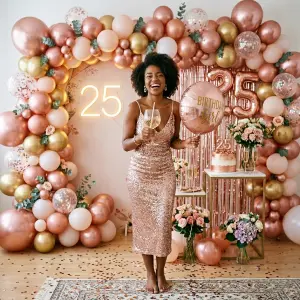
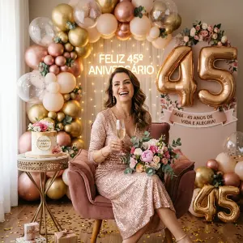
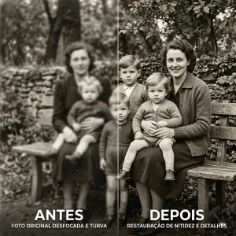
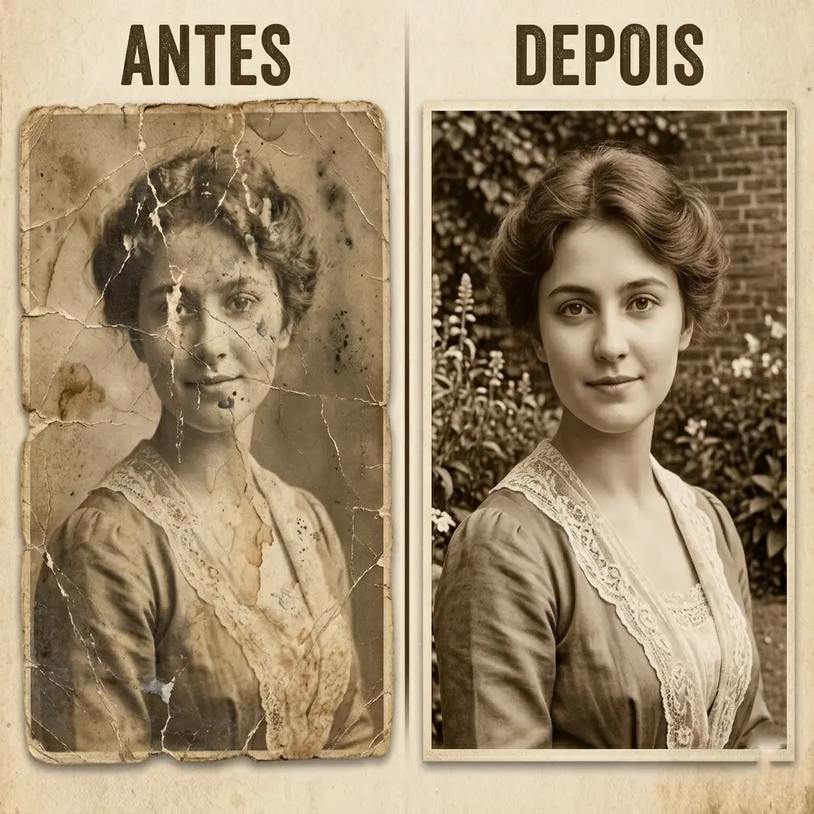
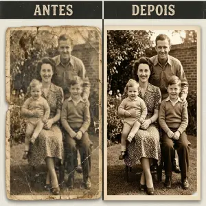
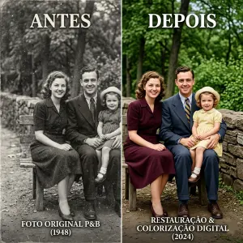
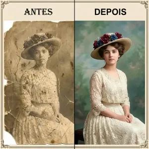

Ensaios fotográficos de alto padrão e restaurações impecáveis criadas por Inteligência Artificial. Estética editorial e texturas reais sem sair de casa.
Chamar no WhatsAppTransmita autoridade e confiança. Ideal para perfis profissionais, currículos e palestrantes. Chega de selfies amadoras no seu perfil.
Celebre sua nova fase com cenários incríveis. Balões, luzes e magia, sem a bagunça de uma festa real.


Registre a fase mais incrivel de sua vida.
Traga memórias de volta à vida. Colorimos e removemos riscos de fotos antigas de família.





Olá sou especialista em inteligência artificial aplicada à criação de imagens, com mais de 5 anos de experiência no desenvolvimento de modelos de ponta. Ao longo da minha jornada, já atendi mais de 300 clientes, entregando imagens ultra-realistas e restaurações precisas. Minha paixão é transformar ideias em visuais impactantes, com tecnologia de ponta e atenção impecável aos detalhes. Se você busca inovação, precisão e um olhar criativo, eu estou pronto para transformar sua visão em realidade.
Diferente de aplicativos automáticos genéricos, eu curo e edito cada imagem para garantir que seus traços reais sejam preservados, entregando um resultado 100% profissional e natural.
Chame no WhatsApp e conte qual estilo de ensaio você deseja. Estamos prontos para sugerir o melhor conceito para você.
Envie algumas selfies e fotos de referência. Nossa IA precisa conhecer seus traços para manter 100% da sua identidade.
Você recebe suas fotos em alta resolução, com tratamento profissional, prontas para as redes sociais.
⭐⭐⭐⭐⭐ +300 clientes satisfeitos com a precisão da nossa IA.
"Fiquei impressionada com o realismo. Usei as fotos para meu LinkedIn e já recebi vários elogios. Ninguém diz que foi feito por IA!"
"Restaurei fotos antigas do meu avô e o resultado foi emocionante. O Thiago tem um cuidado absurdo com os detalhes faciais."
"Precisava de um ensaio de gestante mas não queria sair de casa. O resultado ficou cinematográfico. Vale cada centavo!"
"Sou palestrante e precisava de fotos que passassem autoridade. O resultado superou qualquer estúdio físico que já fui."
"A velocidade de entrega me surpreendeu. Em menos de 24h eu já estava com meu ensaio de aniversário pronto para o Instagram."
"O suporte do Thiago é nota 10. Ele ajustou cada detalhe que pedi até ficar perfeito. Indico para todo mundo!"
Agenda aberta para esta semana. Garanta seu ensaio.
Agende seu Ensaio Aqui